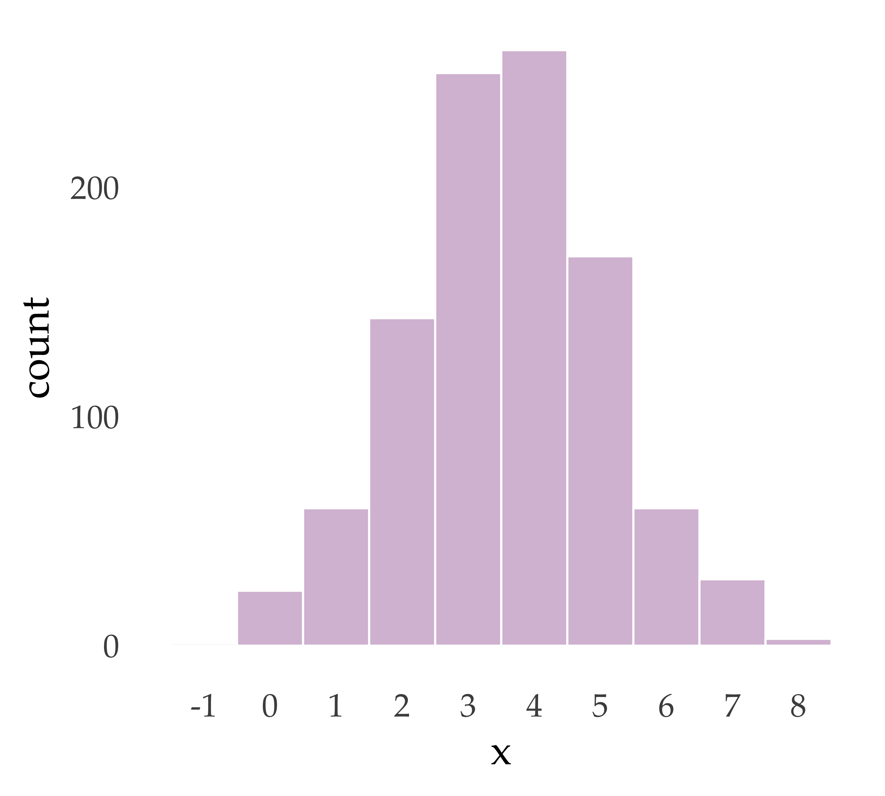
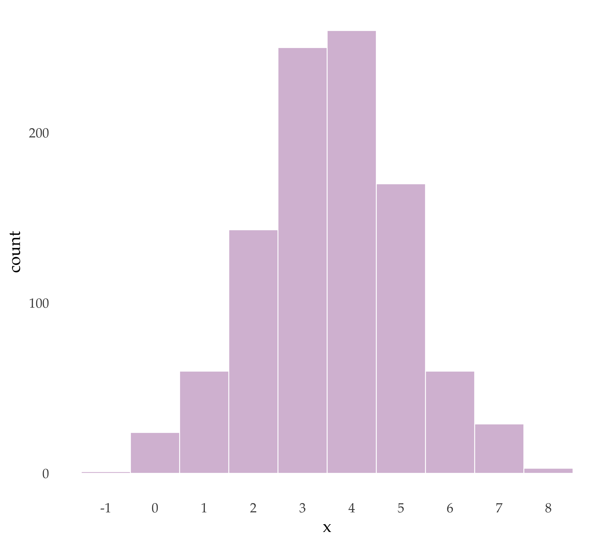
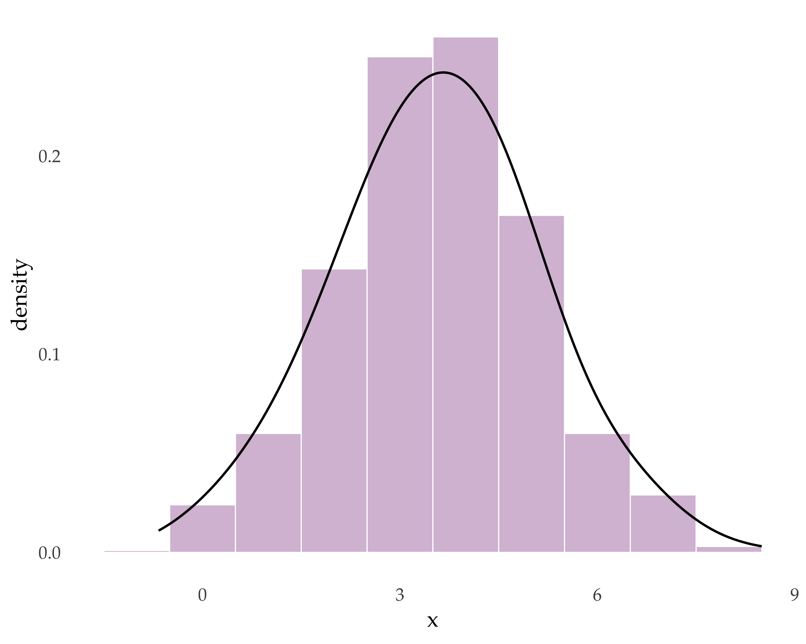
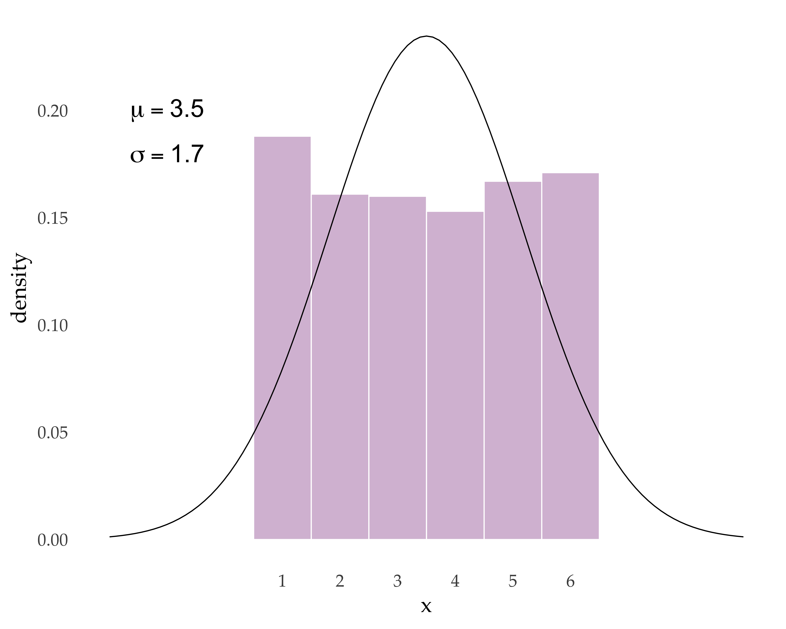
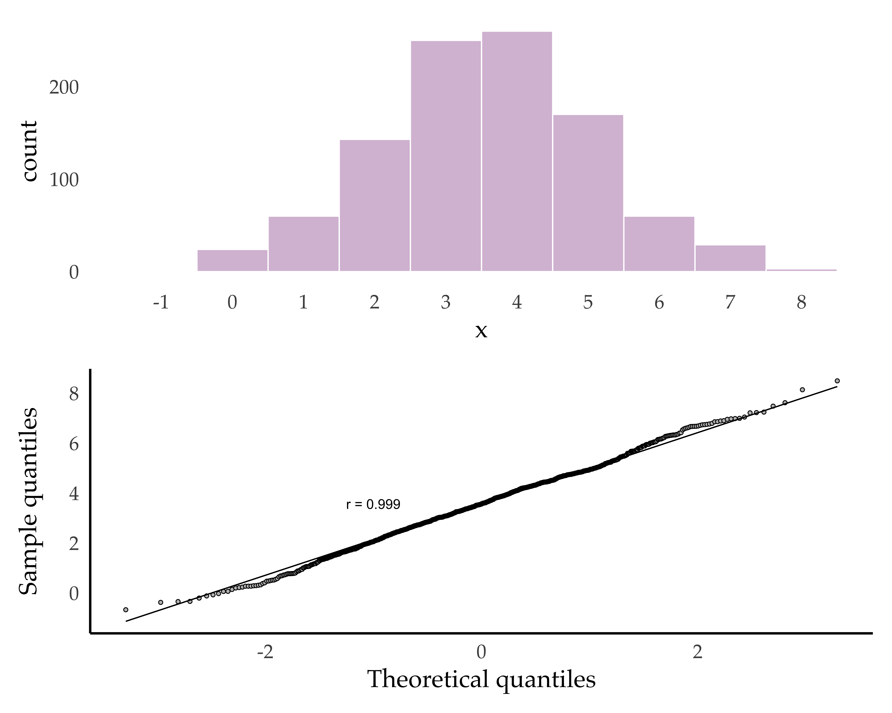
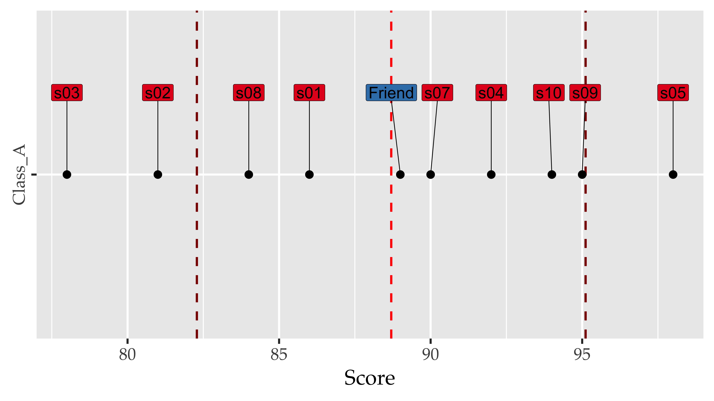
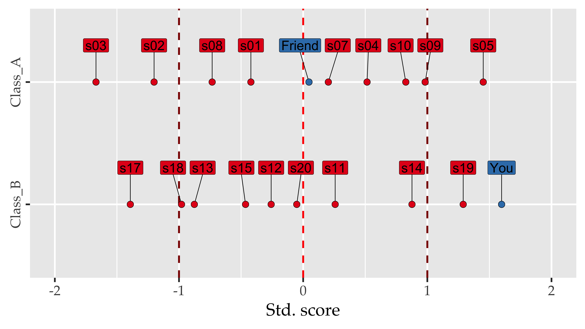

Data Science for Linguists
Distributions
Joseph V. Casillas, PhD
Rutgers University
Last update: 2025-01-04
Statistical thinking
Statistical thinking A necessary evil
Mastering quantitative methods is an “[…] increasingly vital component of linguistic training” (Johnson, 2011b).
Main roadblock = lack of resources
Most programs don’t offer this training. Students get it elsewhere (or not at all)
Not a lot of good texts made specifically for linguistics
- “Linguists learn to do stats on the street.”
- “If you want to be a phonetician today, you really have to train to be a programmer.”
Statistical thinking Big picture
- It’s all guessing. We use stats and hypothesis testing to assess our guesses
“All models are wrong, but some are useful”
- George Box
- A primary goals of this class: teach you to build useful models and to understand how to assess their usefulness
Statistical thinking An aside
Statistics is hard
You are learning
You will make mistakes
You should come away with a better understanding of the big picture
Ideally this would be the first class of many you take on the subject
Statistical thinking
Goals (according to Johnson, 2011b)
Data reduction
Inference
Discovery of relationships
Exploration
Really?
EDA or CDA?
Exploratory data analysis
vs.
Confirmatory data analysis
EDA: used to get to know your data, to generate hypotheses
CDA: used ONLY to test hypotheses
- Issues
- data dredging, p-hacking
- Many scientists do EDA first, and establish their hypotheses a posteriori (once you have already found “significant” differences)
- This is pseudoscience!
Both EDA and CDA (done correctly) are a necessary part of science
Observations
What is an observation anyway?
What is an observation anyway?
What is an observation anyway?
What is an observation anyway?
What is an observation anyway?
What is an observation anyway?
What is an observation anyway?
What is an observation anyway?
What is an observation anyway?
Johnson (2011b) discusses 4 types…
- Nominal
- Ordinal
- Interval
- Ratio
The type of observations you deal with are related to your area of research and your questions.
The type of observations you analyze will determine the statistical methods you use to answer your questions.
Different types of observations are distributed in different ways.
Distributions
DistributionsThe basics
If we collect a series of observations we have a sample of data
We can create a
histogramby selecting a bin size and counting the frequency of the values in our sample that fall inside the binA histogram shows us the frequency distribution of our sample
For example, the histogram to the right shows that the value
3appears in this sample over 200 times
Distributions
Describing the sample
We can describe the characteristics of our sample to see how the values are distributed.
For this we use…
Measures of central tendency (mid-point)
Measures of dispersion (around mid-point)
Distributions
Describing the sample
Measures of central tendency (mid-point)
Distributions
Describing the sample
Measures of dispersion (around mid-point)
[1] 2 5 8- range: difference between highest and lowest value
- variance: subtract mean from each value, sum the squares and divide by n - 1
- standard deviation: square root of the variance
Distributions
More about distributions
There are many families of distributions1, each of which have important characteristics.
The most important for us (for now) is the normal distribution.
It is easy to recognize because it looks like a bell.

Distributions
The normal distribution
- If we decrease the bin size in our histogram (the range of observations used for each vertical bar) we can see the distribution looks more bell-like
Distributions
The basics
If we continue decreasing the bin size we can also see that the rectangular shape of the vertical bars becomes a curved line
We can do this to the point that the bin sizes are decreased to the limit at zero
The formula that derives this line is called a probability density function.

Distributions
Less-than-normal data
- Likewise it is easy to notice when a distribution is not normal.
- We can end up with non-normal data for many reasons.
- Sometimes it depends on the nature of what we are measuring.

Distributions
Less-than-normal data
- because of the nature of the data generating process
- because of outliers
- because of other underlying population differences
Distributions Is my data normal
QQ plots
- A good way to check if our data is normal
- A qq-plot = plot quantile scores from data and quantile scores predicted by normal curve.
- If data come from the same distribution, the points follow the reference line.
- We can check the correlation between a vector of data and the theoretical quantiles.
- Normal data should be highly correlated with theoretical quantiles from the normal distribution (more on correlation next week).

Distributions Empirical rule
- There is something else special about the normal distribution.
- It has a useful property called the empirical rule1
For data which follow a normal distribution:
- 68% of the data fall within 1σ of µ
- 95% of the data fall within 2σ of µ
- 99.7% of the data fall within 3σ of µ
- µ (mew): pop. mean
- σ (sigma): pop. sd
- x̄ (x-bar): sample mean
DistributionsStandardizing
- We can take samples of data and standardize them–convert them to z-scores–to put them on the same scale (this will be a handy technique later on)
- z-score: A z-score (or standard score) represents the number of standard deviations a given value x falls from the mean, μ.
DistributionsConvert to z-score
Subtract the mean from each value and divide by the standard deviation
\[\color{red}{z} = \frac{\color{green}{x} - \color{orange}{\mu}}{\color{blue}{\sigma}}\]
vec1
2 - 5 = -3 / 3 = -1
5 - 5 = 0 / 3 = 0
8 - 5 = 3 / 3 = 1vec2
22 - 55 = -33 / 33 = -1
55 - 55 = 0 / 33 = 0
88 - 55 = 33 / 33 = 1Distributions
Convert to z-score
Subtract the mean from each value and divide by the standard deviation
\[\color{red}{z} = \frac{\color{green}{x} - \color{orange}{\mu}}{\color{blue}{\sigma}}\]
Example - Exam scores
- Imagine you and a friend took exams in different classes.
- You received the same raw score (89 out of 100)
- The exams were graded on a curve and your curved grade is higher than your friends. Why?
Exam scores
| Range | Median | Mean score | SD score |
|---|---|---|---|
| 20 | 89.5 | 88.7 | 6.412661 |
| group | Range | Median | Mean score | SD score |
|---|---|---|---|---|
| Class_A | 20 | 89.5 | 88.7 | 6.412661 |
| Class_B | 29 | 72.0 | 73.5 | 9.698224 |
Exam scores - Standardized
| id | score | Std. score | Dev. score |
|---|---|---|---|
| s03 | 78.00 | -1.67 | -10.70 |
| s02 | 81.00 | -1.20 | -7.70 |
| s08 | 84.00 | -0.73 | -4.70 |
| s01 | 86.00 | -0.42 | -2.70 |
| Friend | 89.00 | 0.05 | 0.30 |
| s07 | 90.00 | 0.20 | 1.30 |
| s04 | 92.00 | 0.51 | 3.30 |
| s10 | 94.00 | 0.83 | 5.30 |
| s09 | 95.00 | 0.98 | 6.30 |
| s05 | 98.00 | 1.45 | 9.30 |
| id | score | Std. score | Dev. score |
|---|---|---|---|
| s17 | 60.00 | -1.39 | -13.50 |
| s18 | 64.00 | -0.98 | -9.50 |
| s13 | 65.00 | -0.88 | -8.50 |
| s15 | 69.00 | -0.46 | -4.50 |
| s12 | 71.00 | -0.26 | -2.50 |
| s20 | 73.00 | -0.05 | -0.50 |
| s11 | 76.00 | 0.26 | 2.50 |
| s14 | 82.00 | 0.88 | 8.50 |
| s19 | 86.00 | 1.29 | 12.50 |
| You | 89.00 | 1.60 | 15.50 |
You’re friend received the same score on her exam,
but you did better relative to the rest of your class
Key points
- EDA and CDA are essential parts of data science
- Obtaining scientific data in not a trivial process
- Observations can be classified as nominal, ordinal, interval or ratio
- Histograms of a sample distribution are useful for visualizing data
- Descriptive statistics allow us to visualize data mathematically
- There are many families of distributions
- The normal distribution is important for hypothesis testing
- QQ plots can help to determine if data are normal
- z-scores can be used to compare data derived from different sources
References
Johnson, K. (2011a). Fundamentals of quantitative analysis. In K. Johnson (Ed.), Quantitative methods in linguistics (pp. 1–33). Wiley.
Johnson, K. (2011b). Quantitative methods in linguistics. Wiley.
Takahashi, S. (2009). The manga guide to statistics. Trend-Pro CO., LTD.
Wickham, H., & Grolemund, G. (2016). R for data science: Import, tidy, transform, visualize, and model data. O’Reilly Media.